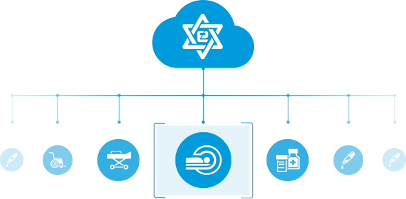

2016
年度报告
[ 设备篇 ]
by 数联医信
您通过医信云服完成了
台设备盘点,估值达
100%
@@include('./toop_outer.html', { "num": 16, "nav":"outer" }) @@include('./toop_outer.html', { "num": 16, "nav":"inside" })
台帐
准确率
其中
Ⅱ、Ⅲ类医疗器械
云台帐准确率提升至
100%
, 高于行业平均水平。

多科室 同步盘点
by 数联医信
设备关注度最高,反应最快
TOP 3 科室
1
2
3
by 数联医信
已有设备管理渠道
by 数联医信
设备可用率
TOP3 设备
及时修复率
TOP3 科室
2016年累计节约
小时
维修时间
设备正常运转
为保证患者生命质量提供最及时支持
by 数联医信
设备科的日记
by 数联医信
by 数联医信
*长按二维码，关注医信云服
目前数联医信已覆盖
19
个省份，
服务
三百
余家客户。
2016感谢有您。
申请试用
医信云服
重播
我要分享
工作邮箱:vip@shulianyixin.com
by 数联医信
信息提交成功
*长按二维码，关注医信云服
目前数联医信已覆盖
19
个省份，
服务
三百
余家客户。
2016感谢有您。
重播
我要分享
工 作邮箱:vip@shulianyixin.com
by 数联医信
点击右上角
分享到朋友圈
试用信息填写
提交
*关注公众号，即时了解云服信息
by 数联医信
您的浏览器不支持 audio 标签。
参数错误